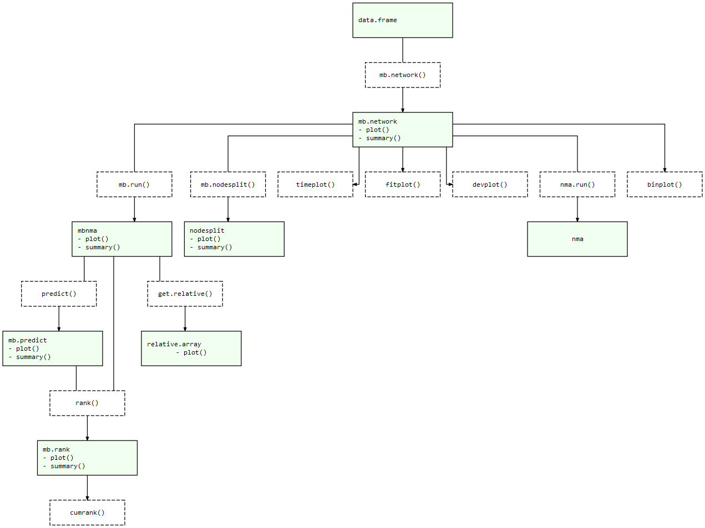

The goal of MBNMAtime is to provide a collection of useful commands that allow users to run time-course Model-Based Network Meta-Analysis (MBNMA). This allows meta-analysis of studies with multiple follow-up measurements that can account for time-course for a single or multiple treatment comparisons.
Including all available follow-up measurements within a study makes use of all the available evidence in a way that maintains connectivity between treatments, and it does so in a way that explains time-course, thus explaining heterogeneity and inconsistency that may be present in a standard Network Meta-Analysis (NMA). All models and analyses are implemented in a Bayesian framework, following an extension of the standard NMA methodology presented by Lu and Ades (2004) and are run in JAGS (JAGS Computer Program 2017). For full details of time-course MBNMA methodology see Pedder et al. (2019).
Installation
Currently the package is available on CRAN and can can be installed using:
install.packages("MBNMAtime")The development version can be installed directly from GitHub using the devtools R package:
# First install devtools
install.packages("devtools")
# Then install MBNMAtime directly from GitHub
devtools::install_github("hugaped/MBNMAtime")Workflow
Functions within MBNMAtime follow a clear pattern of use:
- Load your data into the correct format using
mb.network() - Specify a suitable time-course function and analyse your data using
mb.run() - Test for consistency using functions like
mb.nodesplit() - Examine model results using forest plots and treatment rankings
- Use your model to predict responses or estimate treatment effects at specific time-points using
predict()
At each of these stages there are a number of informative plots that can be generated to help make sense of your data and the models that you are fitting. Exported functions in the package are connected like so:
MBNMAtime package structure: Light green nodes represent classes and the generic functions that can be applied to them. Dashed boxes indicate functions that can be applied to objects of specific classes 